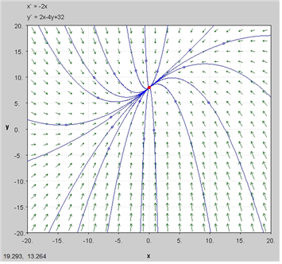
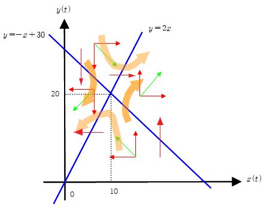
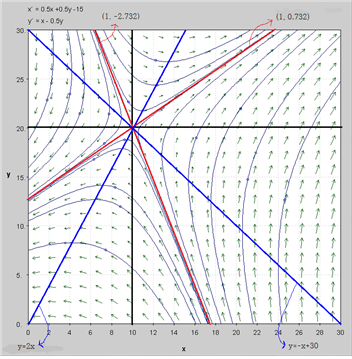
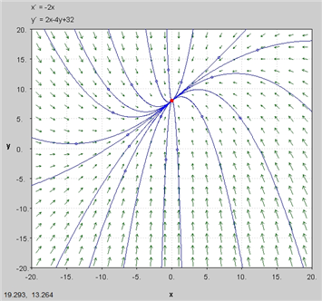
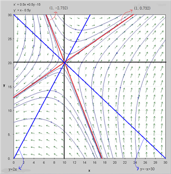

① 단일 자율미분방정식의 위상선 → ② 정상상태와 안정성 → ③ 2변수 연립미분방정식과 nullcline → ④ 고유값에 따른 국소 위상형 → ⑤ 비선형 시스템의 Jacobian 선형화 → ⑥ 경제학 동학모형의 saddle path 분석
관련 기초는 연립미분방정식과 안정성, 전체 목차는 미분방정식과 응용을 참고한다.
다음과 같은 미분방정식을 생각해 보자.
$ \dfrac{dy(t)}{dt}=f(y) $
위상도 분석은 미분방정식의 해를 구하기 어려울 때 기하학적으로 해의 의미를 해석하는데 유용하게 사용된다. 특히 경제학에서 그림의 형태를 보고 해의 수렴 또는 발산을 판정하는 데 사용된다.
위상선은 위상도에 $y$와 $ \dfrac{dy}{dt} $의 관계를 나타내는 선이다.
값이 수평축 위에 있을 때, 즉 $ \dfrac{dy}{dt} > 0 $ 일 때 $ y $는 시간이 흐름에 따라 증가함을 의미. 그래프에서는 $ y $ 선상에 왼쪽에서 오른쪽으로 화살표를 표시한다.
값이 수평축 아래에 있을 때, 즉 $\dfrac{dy}{dt} < 0 $ 일 때 $ y $는 시간이 흐름에 따라 감소함을 의미. 그래프에서는 $ y $ 선상에 오른쪽에서 왼쪽으로 화살표를 표시한다.
$ \dfrac{dy}{dt}= 0 $ 인 점을 임계점(critical point) 또는 균형점(equilibrium point)이라 한다.
특히 경제학에서는 이 점을 정상상태 균형(steady-state equilibrium)이라 한다.
1. 물리, 화학 등 다른 학문에서는 정상상태(steady-state)는 안정상태를 의미하는 것으로 쓰임. 경제학에서의 일정상태(steady-state)는 소득,
소비, 자본 등이 모두 일정한 속도로 성장하는 것을 의미한다.
$ \dfrac{dy}{dt}= 0 $ 인 점(균형점 $y^*$)에서 $f'(y^*) < 0$이면 해의 수렴을 의미하므로 안정상태 균형(stable equilibrium)이라 한다.
$ \dfrac{dy}{dt}= 0 $ 인 점에서 $f'(y^*) > 0$이면 해의 발산을 의미하므로 해는 불안정 상태에 있음을 알 수 있다.
즉, 교차점에서 위상선의 기울기가 음(-)일 때 교차점은 안정적이고, 교차점에서 위상선의 기울기가 양(+)일 때 교차점은 불안정함을 알 수 있다.
(참고: $f(y^*)$는 균형점에서 함수값으로 항상 0이므로, 안정성 판정에는 도함수 $f'(y^*)$를 사용해야 함)
$$ \begin{tikzpicture}[scale=2] % draw the axis \draw [thick, ->] (-1,0) -- (5,0); \draw [thick, ->] (0,-1) -- (0,2); % draw the curve \draw [blue, thick, domain=0.5:3.5] plot (\x, {-(\x-1)*(\x-3)}); % draw the arrows \draw [->, very thick, red] (0.9,-0.21) -- (0.8,-0.44); \draw [->, very thick, red] (1.1,0.19) -- (1.2,0.36); \draw [->, very thick, red] (1.5,0.75) -- (1.6,0.84); \draw [->, very thick, red] (2.4,0.84) -- (2.5,0.75); \draw [->, very thick, red] (2.8,0.36) -- (2.9,0.19); \draw [->, very thick, red] (3.2,-0.44) -- (3.1,-0.21); % draw the labels \node at (-0.2,-0.2) {$0$}; \node at (0,2.3){$\dfrac{dy(t)}{dt}$}; \node at (5.2,0){$y(t)$}; \filldraw [gray] (1,0) circle (2pt); \filldraw [gray] (3,0) circle (2pt); \node at (1.2,-0.5){$y_{1}(t)^*$}; \node at (2.8,-0.5){$y_{2}(t)^*$}; \end{tikzpicture} $$
(그림 1)에서 보듯이 $y$의 증감을 화살표로 표시한다. 화살표의 방향은 위상선의 기울기와는 무관하다.
(그림 1)에는 $y_{1}(t)^*$, $y_{2}(t)^*$, 2개의 균형점이 존재한다.
(그림 1)에서 보듯이 교차점에서 위상선의 기울기가 음일 때 교차점은 안정적임을 알 수 있다. $y_{2}(t)^*$는 시간이 흘러도 변하지 않고 안정적이므로 안정상태 균형(stable equilibrium)임을 알 수 있다. $y_{1}(t)^*$는 시간이 흐름에 따라 안정적이지 않고 미세한 왼쪽의 움직임은 왼쪽, 미세한 오른쪽의 움직임은 오른쪽으로 이동한다. 교차점에서 위상선의 기울기가 양일 때 교차점은 불안정하다.
$$ \begin{tikzpicture}[scale=2] % draw the axis \draw [thick, ->] (-1,0) -- (4,0); \draw [thick, ->] (0,-1) -- (0,2.5); % draw the curve \draw [blue, thick, domain=0.7:3.3] plot (\x, {(\x-2)*(\x-2)}); % draw the arrows \draw [->, very thick, red] (0.9,1.21) -- (1,1); \draw [->, very thick, red] (1.5,0.25) -- (1.6,0.16); \draw [->, very thick, red] (2.5,0.25) -- (2.6,0.36); \draw [->, very thick, red] (3,1) -- (3.1,1.21); % draw the labels \node at (-0.2,-0.2) {$0$}; \node at (0,2.8){$\dfrac{dy(t)}{dt}$}; \node at (4.2,0){$y(t)$}; \filldraw [gray] (2,0) circle (2pt); \node at (2,-0.3){$y(t)^*$}; \end{tikzpicture} $$
$ y(t) < y^∗ $ 일 때 $ \dfrac{dy}{dt}> 0 $, $ y(t) > y^∗ $ 일 때 $ \dfrac{dy}{dt} > 0 $ 따라서 $ y^∗ $는 불안정함을 알 수 있다. 이와 같이 접하는 경우의 해를 안장점(saddle point)라고 한다. 안장점도 불안정한 균형이다.
위의 (그림 2)처럼 1차원 자율미분방정식에서 균형점의 한쪽에서는 접근하고 다른 쪽에서는 이탈하는 경우는 보통 반안정 균형(semistable equilibrium)이라고 부르는 것이 더 정확하다.
안장점(saddle point)과 안장경로(saddle path)는 아래의 2차원 이상 연립시스템에서, 서로 다른 방향의 고유값 부호가 반대일 때 나타나는 위상구조를 가리키는 것이 일반적이다.
솔로우 성장모형은 다음과 같다.
총생산함수 $ Y = F(K,L) $, $ K $는 자본, $ L $은 노동
(가정) 생산함수 $ Y $는 증가함수면서 강오목함수이다. $ s $는 저축률로 일정하며, 노동증가율은 $ \lambda $ 로 일정하다.
(풀이) $ y = \dfrac{\partial F}{\partial L}$, $k = \dfrac{K}{L} $ 이라 하면 솔로우 기본방정식은 $ \dfrac{dk}{dt} = sy(k)-\lambda k $이다.
이는 비선형 미분방정식이므로 해를 도출하기가 쉽지않다. 해를 구하지 않고도 솔로우 모형의 해가 수렴 또는 발산하는지 알기위해 이를 그림으로 표현하면 (그림 3)과 같다.
$$ \usetikzlibrary{decorations.markings} \begin{tikzpicture}[scale=2] \draw [thick, ->] (-2,0.5) -- (5,0.5); \draw [thick, ->] (-1,-1) -- (-1,4); \draw [blue, thick] (-1,0.5) -- (4,4); \draw [dashed] (3.2,0.5) -- (3.2,4); \draw [orange,thick] (-1,0.5) .. controls (1,3) and (3,3.5) .. (4,3.6); \draw [green, thick, domain=-0.8:4.2] plot (\x, {-0.7*(\x-3.2)^2+1.8}); \filldraw [gray] (3.2,0.5) circle (2pt); \begin{scope}[smooth,postaction={decorate},decoration={ markings, mark=at position 0.2 with {\arrow{>}}, mark=at position 0.4 with {\arrow{>}}, mark=at position 0.6 with {\arrow{>}}, mark=at position 0.8 with {\arrow{<}}, mark=at position 0.9 with {\arrow{<}} }] \draw[red, thick,postaction={decorate}] (-1,0.5) .. controls (1,1.5) and (3,1.5) .. (4.5,-1); \end{scope} \node at (-1.3,0.2) {$0$}; \node at (5.5,0.5){$k(t)$}; \node at (3.2,0){$k(t)^*$}; \node at (1.7,1.3){$sy(k)-\lambda k$}; \node at (4.2,4.2){$\lambda k$}; \node at (4.5,3.6){$sy(k)$}; \end{tikzpicture} $$
다음의 자율시스템을 생각한다.
$$\dot{x}=f(x,y), \qquad \dot{y}=g(x,y)$$
(1) $\dot{x}=0$인 곡선과 $\dot{y}=0$인 곡선, 즉 nullcline을 구한다.
(2) 두 nullcline의 교점에서 정상상태 $(x^*,y^*)$를 찾는다.
(3) 각 영역에서 $\dot{x}$와 $\dot{y}$의 부호를 조사하여 화살표 방향을 정한다.
(4) 선형시스템이면 계수행렬의 고유값을, 비선형시스템이면 정상상태에서의 Jacobian 고유값을 이용하여 국소 안정성을 판정한다.
다음의 연립미분방정식을 고려한다.
$ \mathbf{y}'(t) = \mathbf{A} \mathbf{y}(t) + \mathbf{v} $
위상도 분석은 $ \mathbf{A} $가 2×2 행렬인 경우에 대해서만 가능하다. 그 이상인 경우는 그림으로 분석하기 곤란하기 때문이다.
$ \mathbf{y}'(t) = 0 $인 곡선을 등고선(等高線, zero-growth isoclines)이라 한다. 등고선은 함수의 기울기가 항상 같은 점을 모은 선을 의미한다. 이 경우는 예를 들어 설명하는 것이 편리하다.
$x$, $y$는 시간 t의 함수, $x(t), y(t) $
$ \dfrac{dx}{dt} = -2x $
$ \dfrac{dy}{dt} = 2x - 4y +32 $
[풀이]
균형점은 $ \dfrac{dx}{dt} = \dfrac{dy}{dt} = 0 $ 에서 결정되므로
$ \dfrac{dx}{dt} = -2x = 0 \Longrightarrow x = 0 $........... ①
$ \dfrac{dy}{dt} = 2x - 4y +32 = 0 \Longrightarrow y = \dfrac{1}{2}x + 8 $........... ②
이 두 연립방정식의 해는 ①, ②를 동시에 만족시켜야 한다.
따라서 균형점은 $(0, 8)$ 이 된다.
이제 이 해의 수렴, 발산 여부를 판정해 보자.
이 연립미분방정식의 $\mathbf{A}$ 행렬은
$ \mathbf{A} = \left( \begin{array}{cc} -2 & 0 \\ 2 & -4 \\ \end{array} \right) $
고유근의 특성방정식이 $ \Pi(\lambda) = \lambda^2 - \text{tr(A)}\lambda + \text{det(A)} $ 일 때
$ \text{tr(A)} = -6, \text{det(A)} = 8 $ 에서
근의 판정은 $ \text{tr(A)}^2 - 4\text{det(A)} = 36-32 > 0 $, 따라서 두 개의 실근이다.
$ \text{det(A)} = 8 > 0$ 이므로 근은 부호가 같고 $ \text{tr(A)} = -6 < 0 $ 이므로 두 근은 모두 음수이다.
따라서 해의 경로는 균형점 $(0, 8)$ 을 향해 수렴함을 알 수 있다.
그런데 미분방정식의 해를 구하지 않고도 위상도 분석만으로 해의 수렴, 발산 여부를 판정할 수 있다.
정상상태(steady state)에서 상태변수들은 시간에 따라 변하지 않으므로 $ \dfrac{dy}{dt} = 0, \dfrac{dx}{dt} = 0 $
(i) $\dfrac{dx}{dt} = -2x = 0 $
$ x = 0 $ 이므로 (그림 4)에서 y 축으로 표시. y 축을 중심으로 좌우에서 벡터의 방향을 추정.
$ \dfrac{dx}{dt} > 0 \Longrightarrow \dfrac{dx}{dt} = -2x > 0 \Longrightarrow x < 0 $
즉 x가 0보다 작은 구간(y 축의 좌측)에서는 x는 시간의 증가에 따라 증가한다. 이는 (그림 4)의 y축 좌측의 화살표 방향으로 표시된다. x가 증가하는 것이므로 화살표의 방향은
x가 0보다 작은 구간(그림의 2, 3사분면)에서 좌에서 우로 흐르는 모양이 된다.
물론 시간의 감소의 경우는 화살표가 반대방향이 되겠지만 시간은 항상 증가하므로 시간의 감소는 고려하지 않는다.
$ \dfrac{dx}{dt} < 0 \Longrightarrow x> 0 $
즉 x가 0보다 큰 구간(y 축의 우측)에서는 x는 시간의 증가에 따라 감소한다. 이는 (그림 4)의 y축 우측의 화살표 방향으로 표시된다. x가 감소하는 것이므로 화살표의 방향은 x가 0보다 큰 구간(그림의 1, 4사분면)에서 우에서 좌로 흐르는 모양이 된다.
(ii) $ \dfrac{dy}{dt} = 2x - 4y +32 $
$ \dfrac{dy}{dt} = 0 \Longrightarrow 2x - 4y +32 = 0 \Longrightarrow y = \dfrac{1}{2}x + 8 $ 이므로 (그림 5)의 파란선이다.
$ \dfrac{dy}{dt} > 0 \Longrightarrow 2x - 4y +32 > 0 $ 을 만족시키는 부분은 (그림 5)의 파란선을 기준으로 우하 부분이다.
일례로 (0, 0)을 대입해 보면 알 수 있음.
따라서 우하에서는 시간이 지남에 따라 y는 증가하고 이는 (그림 5)에서 y축을 따라 아래서 위로 증가하는 방향으로 화살표가 그려진다.
$ \dfrac{dy}{dt}
< 0 \Longrightarrow 2x - 4y +32 < 0 $ 을 만족시키는 부분은 (그림 5)의 파란선을 기준으로 좌상 부분이다
일례로 (0, 10)을 대입해 보면 알 수 있음.
. 따라서 좌상에서는 시간이 지남에 따라 y는 감소하고 이는 (그림
5)에서 y축을 따라 위에서 아래로 감소하는 방향으로 화살표가 그려진다.
(i), (ii) 두 가지 경우를 모두 고려하여 화살표를 그리면 (그림 6)과 같다. 두 개의 빨간색 화살표의 합이 벡터의 방향을 나타내는 초록색 화살표이다.
$ x=0, y = \dfrac{1}{2}x + 8 $, 두 개의 선이 구간을 네 부분으로 구분한다.
각 구간에 따른 화살표의 방향은 앞의 결과를 합쳐서 그리면 된다.
초록색 화살표는 빨간색 화살표들의 벡터합을 의미한다. 시간의 경과에 따라 초록색 화살표의 방향으로 상태변화가 이루어진다는 것을 의미한다.
$ \dfrac{dx}{dt} = 0 $ 에서 $ x = 0$ 함수는 x의 변화율이 0을 의미하므로 이 선상에서는 상하로만 변화가 있음을 의미한다.
$ \dfrac{dy}{dt} = 0 $ 에서 $ y = \dfrac{1}{2}x + 8 $ 함수는 y의 변화율이 0을 의미하므로 이 선상에서는 좌우로만 변화가 있음을 의미한다.
상태 $ x(t), y(t) $는 임의의 점에서 시작해도 (0, 8) 점을 향해 흐름을 알 수 있고, 이 점은 안정점이 된다.
$$ \begin{tikzpicture}[scale=0.2] % draw the axis \draw [thick, ->] (-24,0) -- (24,0); \draw [thick, ->] (0,-20) -- (0,24); % 위상 화살표 그리기 \draw [red,->] (-16,16) -- (-8,16); \draw [red,->] (-16,16) -- (-16,8); \draw [red,->] (-16,16) -- (-8,8); \draw [red,->] (10,22) -- (2,22); \draw [red,->] (10,22) -- (10,14); \draw [red,->] (10,22) -- (2,14); \draw [red,->] (-12,-10) -- (-12,-2); \draw [red,->] (-12,-10) -- (-4,-10); \draw [red,->] (-12,-10) -- (-4,-2); \draw [red,->] (10,-2) -- (10,6); \draw [red,->] (10,-2) -- (2,-2); \draw [red,->] (10,-2) -- (2,6); \draw [green,ultra thick,->] (-22,8) .. controls (-16,2) and (-10,2) .. (-4,4); \draw [green,ultra thick,->] (-4,-20) .. controls (-8,-10) and (-8,-2) .. (-4,2); \draw [green,ultra thick,->] (4,24) .. controls (6,20) and (6,16) .. (2,12); \draw [green,ultra thick,->] (22,6) .. controls (16,16) and (12,16) .. (2,10); % 기준선 그리기 % \draw [blue, thick, domain=-1:2.5] plot (\x, \x-0.5); \draw [blue, ultra thick, ->] (0,-20) -- (0,24); \draw [blue, ultra thick, domain=-22:22] plot (\x, 0.5*\x+8); % draw the labels \node at (-2,-2) {$0$}; \node at (-2,8) {$8$}; \node at (-16,-2) {$-16$}; \node at (22,14){$y=\dfrac{1}{2}x+8$}; \node at (-4,22){$x=0$}; \node at (26,0){$x$}; \node at (0,26){$y$}; \end{tikzpicture} $$
기준선에서 화살표의 방향이 바뀌는 점에 유의하면서 해의 경로를 그리면 (그림 7)의 굵은 초록색 화살표의 모양이 된다. 초록색 화살표는 여러 가지 초기값에 대응하는 해의 경로를 표시한 것이다.
임의의 점에서 시작하는 벡터들의 모음인 상변화도(phase portrait)를 그려보면 (그림 8)과 같다. 상변화도란 각각의 점에서 변화를 의미하는 벡터필드(vector field)들의 모음이다.

$ \dfrac{dx}{dt} = 0.5x + 0.5y - 15 $
$ \dfrac{dy}{dt} = x - 0.5y $
$ y(t) $ : 대기오염의 규모
$ x(t) $ : 배출가스의 양
[풀이]
정상상태(steady state)에서 상태변수들은 시간에 따라 변하지 않으므로
$ \dfrac{dy}{dt} = 0 $, $ \dfrac{dx}{dt} = 0 $ 인 선들을 그리면 (그림 9), (그림 10)과 같다.
$ \dfrac{dy}{dt} = x - 0.5y \Longrightarrow y = 2x $ .................... ①
$ \dfrac{dx}{dt} = 0.5x + 0.5y - 15 \Longrightarrow y = -x + 30 $ ................②
균형점은 $ \dfrac{dx}{dt} = \dfrac{dy}{dt} = 0 $ 에서 결정되므로
이 두 연립방정식의 해는 ①, ②를 동시에 만족시켜야 한다.
따라서 균형점은 $(10, 20)$ 이 된다.
이 연립미분방정식의 $\mathbf{A}$ 행렬은
$ \mathbf{A} = \left( \begin{array}{cc} \dfrac{1}{2} & \dfrac{1}{2} \\ 1 & -\dfrac{1}{2} \\ \end{array} \right) $
$ \text{tr(A)} = 0, \text{det(A)} = -\dfrac{3}{4} $ 에서
근의 판정은 $ \text{tr(A)}^2 - 4\text{det(A)} = 3 > 0 $, 따라서 두 개의 실근이다.
$ \text{det(A)} = -\dfrac{3}{4} < 0 $ 이므로 근은 부호가 다르고 $ \text{tr(A)}=0 $ 이므로 두 근은 절대값이 같다.
따라서 해의 경로는 균형점 $(10, 20)$ 에서 안정 다양체(stable manifold)와 불안정 다양체(unstable manifold)를 가지며, 이러한 점을 안장점(saddle point)이라고 한다.
이제 좀 더 자세한 해의 경로를 그리면 다음과 같다.
(그림 9)에서
$ y = 2x $의 좌상쪽에 있는 점들은 $ y > 2x $
예를 들어 (0, 1) 은 y = 2x의 좌상쪽에 있는 점이다. x = 0, y = 1을 y = 2x에 대입하면 1 > 0. 따라서 y >
2x
, $ y > 2x $이므로 ①에서 $ \dfrac{dy}{dt} < 0 $ 시간이 지남에 따라 y는 감소한다.
$ y = 2x $의 우하쪽에 있는 점들은 $ y
< 2x $
예를 들어 (1, 0) 은 y = 2x의 우하쪽에 있는 점이다. x = 1, y = 0을 y = 2x에 대입하면 0 > 2. 따라서
y < 2x
, $ y < 2x $이므로 ①에서 $ \dfrac{dy}{dt}> 0 $
시간이 지남에 따라 y는 증가한다.
$ \dfrac{dy}{dt} = 0 \Longrightarrow y = 2x $ 이므로 $ y = 2x $ 선상에서는 y 변화는 없고 x 변화만 있으므로 수평으로 변동
화살표는 항상 시간이 지남에 따라 상태변수의 증감을 의미. 시간의 감소는 고려하지 않는다.
(그림 10)에서
$ y = -x + 30 $의 우상쪽에 있는 점들은 $ y > -x + 30 $
예를 들어 (30, 30) 은 y = -x + 30의 우상쪽에 있는 점이다. x = 30, y = 30을 y = -x + 30에
대입하면 30 > 0, 따라서 y > -x + 30
,
$ y > -x + 30 $ 이므로 ② 에서 $ \dfrac{dx}{dt} > 0 $, 즉 시간이 지남에 따라 x는 증가한다.
$ y = -x + 30 $ 의 좌하쪽에 있는 점들은 y
< -x + 30
예를 들어 (0, 0) 은 y = -x + 30의 좌하쪽에 있는 점이다. x = 0, y = 0을 y = -x + 30에 대입하면 0
< 30, 따라서 y < -x + 30
,
$ y < -x + 30 $ 이므로 ②에서 $ \dfrac{dx}{dt} < 0 $, 즉 시간이 지남에 따라 x는 감소한다.
$ \dfrac{dx}{dt} = 0 \Longrightarrow y = -x + 30 $ 이므로 $y = -x + 30 $ 선상에서는 x 변화는 없고 y 변화만 있으므로 수직으로 변동
두 그림을 결합하여 그리면 다음과 같다. 두 개의 직선이 이루는 부분을 4 구역으로 구분한 다음 앞에서 구한 화살표의 방향을 합치면 (그림 11) 과 같다.

(그림 11)에서 녹색 화살표는 각 수직, 수평 화살표의 합인 벡터의 방향을 의미하며 (그림 11)에는 표시되지 않았지만 각 구간마다 수많은 녹색 벡터들이 존재한다. 고동색 화살표는 이러한 고동색 벡터들의 흐름을 나타낸다.
두 직선이 교차하는 점 (10, 20)이 정상상태(steady state)이다. 그러나 이 점은 안정적이지 않다.
(그림 11)의 상하 분면에서는 (10, 20)으로 접근하지만 좌우 분면에서는 (10, 20)으로부터 발산함을 알 수 있다. 즉 임의의 점에서 (10, 20)로 접근하려 하면 화살표의 방향에 따라 외부로 발산함을 알 수 있다. 따라서 (10, 20)은 안정상태(stable state)가 아님을 알 수 있다. 이러한 점을 안장점(鞍裝點, saddle point)이라 하고 안장점으로 이루어진 경로를 안장경로(saddle path)라 부른다.
임의의 점에서 시작하는 벡터들의 모음인 상변화도를 그려보면 (그림 12)와 같다.

보존 섹션: 아래 내용은 HWP→HTML 변환 정본의 위상도 부분을 수식·그래프·이미지와 함께 그대로 옮긴 것이다. 기존의 보강 설명과 별도로 원본의 표현과 도해를 확인할 수 있도록 유지한다.
\, \frac{dy(t)}{dt} \,=\,F(y)
ㅇ 위상도
- 수평축을 y(t), 수직축을 \, \frac{dy(t)}{dt}로 놓고 y와 \, \frac{dy}{dt}의 관계를 표현한 것
- 수평축을 y(t), 수직축을 y의 함수인 f(y(t))로 표현한 것
ㅇ 위상선(phase line)
- y와 \, \frac{dy}{dt} 또는 y와 f(y(t))의 관계를 나타내는 선
위상도는 미분방정식의 해를 구하기 어려울 때 기하학적으로 해의 의미를 해석하는데 유용하게 사용된다.
값이 수평축 위에 있을 때, 즉 \, \frac{dy}{dt} >0 일 때 y는 시간이 흐름에 따라 증가함을 의미. y는 왼쪽에서 오른쪽으로 흐른다.
값이 수평축 아래에 있을 때, 즉 \, \frac{dy}{dt} <0 일 때 y는 시간이 흐름에 따라 감소함을 의미. y는 오른쪽에서 왼쪽으로 흐른다.
이를 (그림)에서 보듯이 화살표로 표시. 즉, 화살표의 방향은 위상선의 기울기와는 무관하다.
\, \frac{dy}{dt} \,=\,0 인 점을 임계점(critical point) 또는 균형점(equilibrium point)이라 한다.
특히 경제학에서는 이 점을 정상상태 균형(steady-state equilibrium)이라 한다.[33]
(그림)에는 y_{1}^{*} , y_{2}^{*} 2 개의 균형점이 존재한다.
y_{2}^{*} 는 시간이 흘러도 변하지 않고 안정적이므로 안정상태 균형(stable equilibrium)임을 알 수 있다.
미분방정식이 안정상태에 있다면
y*의 근방에서 y<y* 일 때 \, \frac{dy}{dt} >0 , 그리고 y>y* 일 때 \, \frac{dy}{dt} <0 .
(그림)에서 보듯이 교차점에서 위상선의 기울기가 음일 때 교차점은 안정적임을 알 수 있다.
y_{1}^{*} 는 시간이 흐름에 따라 안정적이지 않고 미세한 왼쪽의 움직임은 왼쪽, 미세한 오른쪽의 움직임은 오른쪽으로 이동한다. 교차점에서 위상선의 기울기가 양일 때 교차점은 안정적이지 않다.
x*가 균형점이고 \frac{d}{dx} f(x*)<0 ⇒ 국지적으로 안정적
x*가 균형점이고 \frac{d}{dx} f(x*)>0 ⇒ 불안정
y’(t) = A(t)y(t)+v(t)
주로 A가 2×2 행렬인 경우에 대해서 분석. 그 이상인 경우는 그림으로 분석하기 곤란
y’(t) = 0 인 곡선을 nullclines 이라 한다. sometimes called zero-growth isoclines.
An isocline(等高線) is a curve through points at which the parent function's slope will always be the same. y’(t) = C
nullclines 은 여러 isocline 들 중에 C = 0 인 경우를 의미
예)
\frac{dx}{dt} \,=\,-2x
\frac{dy}{dt} \,=2x-4y+32\,
(풀이)
정상상태(steady state)에서 상태변수들은 시간에 따라 변하지 않으므로
\frac{dx}{dt} =0 , \frac{dy}{dt} =0 선들을 그리면 (그림)과 같다.
(i) \frac{dx}{dt} \,=-2x\,=\,0
x\,=\,0 이므로 (그림 a)에서 y 축으로 표시. y 축을 중심으로 좌우에서 벡터의 방향을 추정.
\frac{dx}{dt} \,>0 ⇒ \frac{dx}{dt} \,=-2x\,>\,0 ⇒ x\,<0
즉 x가 0보다 작은 구간(y 축의 좌측)에서는 x는 시간의 증가에 따라 증가한다. 이는 (그림 a)의 y축 좌측의 화살표 방향으로 표시된다. x가 증가하는 것이므로 화살표의 방향은 x축을 따라 좌에서 우로 흐르는 모양이 된다.[34]
\frac{dx}{dt} \,<0 ⇒ x\,>0
x가 0보다 큰 구간(y축의 우측)에서는 x는 시간의 증가에 따라 감소한다. 이는 (그림a)의 y축 우측의 화살표 방향으로 표시된다. x가 감소하는 것이므로 화살표의 방향은 x축을 따라 우에서 좌로 흐르는 모양이 된다.
(ii) \frac{dy}{dt} \,=2x-4y+32\,=\,0
2x-4y+32\,=\,0 은 (그림 b)에서 파란선이다.
\frac{dy}{dt} \,>\,0 ⇒ 2x-4y+32\,>\,0
이 부등식을 만족시키는 점들은 (그림 b)에서 우하 부분이다.[35] 따라서 우하에서는 시간이 지남에 따라 y는 증가하고 이는 그림에서 y축을 따라 아래서 위로 증가하는 방향으로 화살표가 그려진다.
\frac{dy}{dt} \,<\,0 ⇒ 2x-4y+32\,<\,0
좌상에서는 시간이 지남에 따라 y는 감소하고[36] 이는 그림에서 y축을 따라 위에서 아래로 감소하는 방향으로 화살표가 그려진다.
(i), (ii) 두 가지 경우를 모두 고려하여 화살표를 그리면 (그림 c)와 같다. 두 개의 빨간색 화살표의 합이 벡터의 방향을 나타내는 초록색 화살표이다. 기준선에서 화살표의 방향이 바뀌는 점에 유의하면서 해의 경로를 그리면 굵은 고동색 화살표의 모양이 된다. 고동색 화살표는 여러 가지 초기값에 대응하는 해의 경로를 표시한 것이다.
\frac{dx}{dt} \,=-2x\,=\,0, \frac{dy}{dt} \,=2x-4y+32\,=\,0 두 개의 선이 구간을 네 부분으로 구분한다.
각 구간에 따른 화살표의 방향은 앞의 결과를 합쳐서 그리면 된다. 초록색 화살표는 빨간색 화살표들의 벡터합을 의미한다. 시간의 경과에 따라 초록색 화살표의 방향으로 상태변화가 이루어짐을 알 수 있다.
상태 x(t),\,y(t)는 임의의 점에서 시작해도 (0, 8) 점을 향해 흐름을 알 수 있고, 이 점은 안정점이 된다. 결국 (그림 c)의 고동색 화살표와 같은 방향으로 상태변화가 이루어진다.
실제 상변화도를 그려보면 (그림 d)와 같다.

예) local stock polution model[37]
\frac{dy}{dt} =x(t)-0.5y(t)
\frac{dx}{dt} =0.5x(t)+0.5y(t)\,-\,15
y(t) ; 대기오염의 규모
x(t) ; 배출가스의 양
(풀이) 정상상태(steady state)에서 상태변수들은 시간에 따라 변하지 않으므로
\frac{dy}{dt} =0 , \frac{dx}{dt} =0 인 선들을 그리면 (그림 a), (그림 b)와 같다.
\frac{dy}{dt} =x(t)-0.5y(t)\,=\,0 ⇒ y\,=\,2x ....................①
\frac{dx}{dt} =0.5x(t)+0.5y(t)\,-\,15\,=\,0 ⇒ y\,=\,-x+30 ............②
(그림 a)에서
y\,=\,2x 의 좌상쪽에 있는 점들은 y\,>\,2x[38], y\,>\,2x 이므로 ①에서 \frac{dy}{dt} <0
시간이 지남에 따라 y는 감소한다.
y\,=\,2x 의 우하쪽에 있는 점들은 y\,<\,2x[39], y\,<\,2x 이므로 ①에서 \frac{dy}{dt} >0
시간이 지남에 따라 y는 증가한다.
화살표는 항상 시간이 지남에 따라 상태변수의 증감을 의미. 시간의 감소는 고려하지 않는다.
화살표의 방향이 y축을 따라 평행하게 그려짐에 유의
(그림 b)에서
y\,=\,-x+30 의 우상쪽에 있는 점들은 y\,>\,-x+30[40]
y\,>\,-x+30 이므로 ②에서 \frac{dx}{dt} >0
시간이 지남에 따라 x는 증가한다.
y\,=\,-x+30 의 좌하쪽에 있는 점들은 y\,<\,-x+30[41]
y\,<\,-x+30 이므로 ②에서 \frac{dx}{dt} <0
시간이 지남에 따라 x는 감소한다.
Taking these results together we obtain the pairs of direction indicators for movements in ① and ② for each of the four quadrants when the system is not in steady state
두 그림을 결합하여 그리면 다음과 같다. 두 개의 직선이 이루는 부분을 4 구역으로 구분한 다음 앞에서 구한 화살표의 방향을 합치면 다음 그림과 같다.
두 직선이 교차하는 점 (10, 20)이 정상상태(steady state)임을 알 수 있다. 그러나 이 점은 안정적이지 않다.
아래 그림에서 고동색 화살표는 각 수직, 수평 화살표의 합인 벡터의 방향을 의미하며 (그림)에는 표시되지 않았지만 각 구간마다 수많은 고동색 벡터들이 존재한다. 노란색 화살표는 이러한 고동색 벡터들의 흐름을 나타낸다. 임의의 점에서 (10, 20)로 접근하려 하면 화살표의 방향에 따라 외부로 발산함을 알 수 있다. 따라서 (10, 20)은 안정상태(stable state)가 아님을 알 수 있다. 이러한 점을 鞍裝點(saddle point)이라 하고 안장점으로 이루어진 경로를 안장경로(saddle path)라 부른다.
경제학에서 쓰는 위상도와 미분방정식에서 쓰는 상변화도와의 관계는 다음과 같다.
미분방정식에서 배운 상변화도를 그려보자.
앞의 미분방정식을 다시 쓰면
\frac{dy}{dt} =x(t)-0.5y(t)\,
\frac{dx}{dt} =0.5x(t)+0.5y(t)\,-\,15\,
행렬 형태로 표현하면
{\begin{pmatrix}\frac{dx}{dt} \\ \frac{dy}{dt}\end{pmatrix}} = {\begin{pmatrix}\frac{1}{2} & \; \frac{1}{2} \\ 1 & \,- \frac{1}{2}\end{pmatrix}}{\begin{pmatrix}x(t) \\ y(t)\end{pmatrix}} + {\begin{pmatrix}\;0 \\ -15\end{pmatrix}}
고유치는
\phi ( \lambda )= \lambda^{2} - \frac{3}{4} \,=\,0
∴ \lambda =\pm \frac{\sqrt {3}}{2} \,
고유치의 부호가 바뀌므로 해는 안장경로를 따라 발산한다.
고유벡터는
(i) \lambda = \frac{\sqrt {3}}{2} \,
{\begin{pmatrix}\frac{1}{2} - \frac{\sqrt {3}}{2}&\, \frac{1}{2} \\ 1&- \frac{1}{2} - \frac{\sqrt {3}}{2}\end{pmatrix}}{\begin{pmatrix}a \\ b\end{pmatrix}} = {\begin{pmatrix}0 \\ 0\end{pmatrix}}
p1 = {\begin{pmatrix}1 \\ 0.732\end{pmatrix}} a
(ii) \lambda =- \frac{\sqrt {3}}{2} \,
{\begin{pmatrix}\frac{1}{2} + \frac{\sqrt {3}}{2}&\, \frac{1}{2} \\ 1&- \frac{1}{2} + \frac{\sqrt {3}}{2}\end{pmatrix}}{\begin{pmatrix}a \\ b\end{pmatrix}} = {\begin{pmatrix}0 \\ 0\end{pmatrix}}
p2 = {\begin{pmatrix}1 \\ -2.732\end{pmatrix}} a
두 고유벡터를 점근선으로 하는 x(t),\;y(t)의 상변화도는 다음 그림과 같다.
미분방정식의 해는

위상도는 시간축이 없으므로 균형에 이르기까지 얼마나 시간이 걸리는지를 알 수 없다.
위상도는 변수들의 동시 움직임을 나타내므로, 토빈의 q 이론에서 보듯이 자본량(capital stock)이 높을 때 자본의 가격은 낮다. 또는 그 역도 성립.(사소한 것이지만 기본 성장모형에서는 나타나지 않음)
조정속도는 균형경로의 모양에 따라 다를 수 있음. 가파른 경로는 빠른 수렴을, 완만한 곡선은 느린 조정속도를 의미한다.
물리, 화학 등 다른 학문에서는 정상상태(steady-state)는 안정상태를 의미하는 것으로 쓰임. 경제학에서의 일정상태(steady-state)는 소득, 소비, 자본 등이 모두 일정한 속도로 성장하는 것을 의미. http://terms.naver.com/entry.nhn?docId=778739&mobile&categoryId=520 참조.
↩물론 시간의 감소의 경우는 화살표가 반대방향이 되겠지만 시간은 항상 증가하므로 시간의 감소는 고려하지 않는다.
↩일례로 (0, 0)을 대입해 보면 알 수 있음.
↩일례로 (0, 10)을 대입해 보면 알 수 있음.
↩http://personal.strath.ac.uk/r.perman/Phase.pdf
↩예를 들어 (0, 1) 은 y\,=\,2x의 좌상쪽에 있는 점이다. x=0, y=1을 y\,=\,2x에 대입하면 1 > 0, 따라서 y\,>\,2x
↩예를 들어 (1, 0) 은 y\,=\,2x의 우하쪽에 있는 점이다. x=1, y=0을 y\,=\,2x에 대입하면 0 < 2, 따라서 y\,<\,2x
↩예를 들어 (30, 30) 은 y\,=\,-x+30의 우상쪽에 있는 점이다. x=30, y=30을 y\,=\,-x+30에 대입하면 30 > 0, 따라서 y\,>\,-x+30
↩예를 들어 (0, 0) 은 y\,=\,-x+30의 좌하쪽에 있는 점이다. x=0, y=0을 y\,=\,-x+30에 대입하면 0 < 30, 따라서 y\,<\,-x+30
↩http://astro.temple.edu/~swansonc/607picts.htm
↩선형 자율시스템
$$\dot{\mathbf{x}}=A\mathbf{x}$$
에서 정상상태 주변의 움직임은 행렬 $A$의 고유값에 의해 결정된다. 2차원에서는 다음 분류가 위상도를 해석하는 기본 틀이다.
| 고유값 | 위상형 | 안정성 |
|---|---|---|
| 두 실근 모두 음수 | stable node | 정상상태로 수렴 |
| 두 실근 모두 양수 | unstable node | 정상상태에서 발산 |
| 한 근은 음수, 한 근은 양수 | saddle point | 한 방향은 수렴, 다른 방향은 발산 |
| 복소근, 실수부 < 0 | stable spiral/focus | 진동하며 수렴 |
| 복소근, 실수부 > 0 | unstable spiral/focus | 진동하며 발산 |
| 순허수 고유값 | center 가능 | 선형계에서는 폐곡선 궤도 가능 |
$2\times2$ 행렬 $A$에서 특성방정식은 $$\lambda^2-\operatorname{tr}(A)\lambda+\det(A)=0$$ 이다. 따라서 trace, determinant, 판별식 $$\Delta=[\operatorname{tr}(A)]^2-4\det(A)$$ 의 부호만으로도 상당 부분 위상형을 분류할 수 있다.
비선형 자율시스템
$$\dot{x}=f(x,y), \qquad \dot{y}=g(x,y)$$
은 일반적으로 해를 직접 구하기 어렵다. 정상상태 $(x^*,y^*)$ 근방에서는 다음 Jacobian을 이용하여 선형시스템으로 근사한다.
$$ J(x^*,y^*)= \begin{pmatrix} f_x & f_y\\ g_x & g_y \end{pmatrix}_{(x^*,y^*)} $$
Jacobian의 고유값 실수부분이 모두 음수이면 정상상태는 국소적으로 안정적이며, 양의 실수부분을 갖는 고유값이 존재하면 불안정하다. 부호가 서로 반대인 실수 고유값이 나오면 정상상태는 안장점이 된다.
경제학의 동태모형에서는 자본처럼 과거에 의해 결정되는 상태변수(state variable)와 가격·소비·환율처럼 즉시 조정될 수 있는 점프변수(jump variable)가 함께 등장하는 경우가 많다. 정상상태가 saddle point라면 모든 초기값이 정상상태로 가는 것이 아니라, 특정한 안정고유벡터 방향의 경로에서 출발해야만 장기균형으로 수렴한다. 이 경로가 saddle path이다.
저장소의 Dornbusch overshooting model, Predator–Prey model, Goodwin model은 이러한 2변수 동학과 위상도 해석을 연결해서 볼 수 있는 예이다.
강점:
제약점: